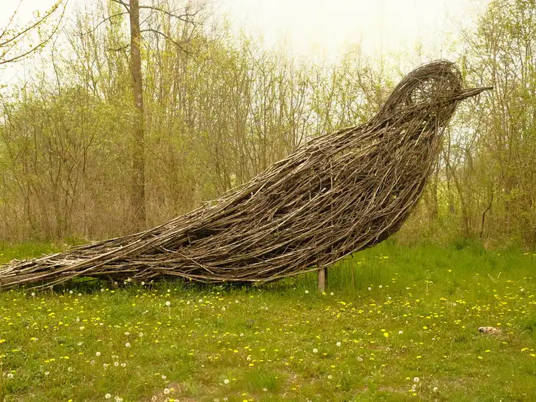

FoRestore
Introduction
Where
Wherever the cleaning of undergrowth or small areas freed from the forest is required (usually next to nature trails).
When
The project begins with the analysis of the available resources obtained from cleaning of the forest and ends with the presentation of the work created with these materials
Objectives
Cleaning of the undergrowth
With this project, ZeroCarbon promotes an initiative that allows us to free dead areas of the forest (fallen trees, uncultivated areas, etc.) which are often places that allow the proliferation of plant diseases, and create organic works with the materials recovered. This frees space for new vegetation to grow and allows you to create a single organic waste accumulation point.
Our beautiful scultures
With the cleaning of the undergrowth and the recovery of organic waste materials, the project is organized for the return of these materials to nature: through this initiative, in fact, our volunteers are accompanied by experts in building magnificent landart works: ecological sculptures that use organic waste to create something beautiful for passers-by. The sculpture is then left to itself and is returned to nature with the passage of time.
Methods
Collaboration with local administrations and volunteering
FoRestore is an initiative financed by ZeroCarbon, but its workforce is concentrated in collaborating with local administrations to obtain target locations and in promoting volunteer campaigns in the area of interest, so as to allow local citizens to work towards restore green places